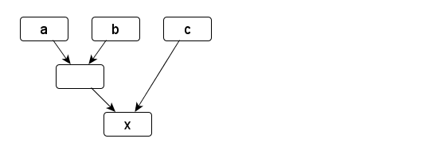
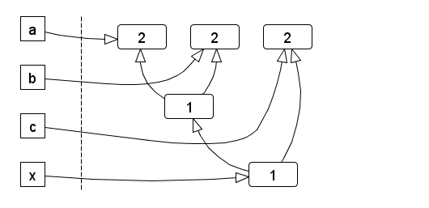
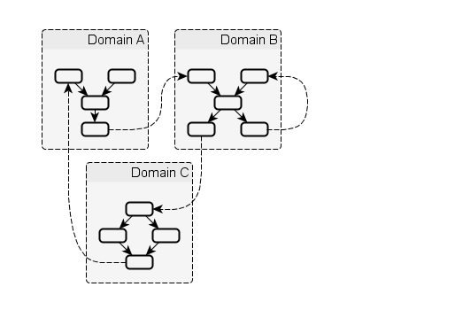
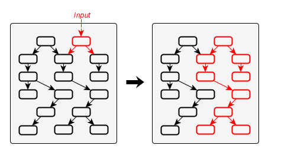

Dataflow model
Graph model
The dataflow between reactive values can be modeled (and visualized) as a directed acyclic graph (DAG).
Such a graph can be constructed from the dependency relations; each entity is a node and directed edges denote data propagation paths.
To give an example, let a, b and c be arbitrary signals.
x is another signal that is calculated based on the former.
Instead of invoking MakeSignal explicitly, the overloaded + operator is used to achieve the same result.
SignalT<S> x = (a + b) + c;
This is the matching dataflow graph:

A similar example could’ve been constructed for event streams.
From a dataflow perspective, what kind of data is propagated and what exactly happens to it in each node is not relevant.
C++React does not expose the graph data structures directly to the user; instead, they are wrapped by lightweight proxies.
Such a proxy is essentially a shared pointer to the heap-allocated node.
Examples of proxy types are Signal, Events, Observer.
The concrete type of the node is hidden behind the proxy.
We show this scheme for the previous example:
SignalT<S> a = MakeVar(...);
SignalT<S> b = MakeVar(...);
SignalT<S> c = MakeVar(...);
SignalT<S> x = (a + b) + c;
The MakeVar function allocates the respective node and links it to the returned proxy.
Not all nodes in the graph are bound to a proxy; the temporary sub-expression a + b results in a node as well.
If a new node is created, it takes shared ownership of its dependencies, because it needs them to calculate its own value.
This prevents the a + b node from disappearing.
The resulting reference graph is similar to the dataflow graph, but with reverse edges (and as such, a DAG as well):

The number inside each node denotes its reference count. On the left are the proxy instances exposed by the API.
Assuming the proxies for a, b and c would go out of scope, but x remains, the reference count of all nodes is still 1, until x disappears as well.
Once that happens, the graph is deconstructed from the bottom up.
From now on, we refer to the set of inter-connected reactive values as a reactive system.
A closed, self-contained reactive system would ultimately be useless, as there’s no way to get information in or out.
In other words, mechanisms are required to
- react to external input; and
- propagate side effects to the outside.
The outside refers to the larger context of the program the reactive system is part of.
To address the first requirement, there exist designated input nodes at the root of the graph.
They are the input interface of the reactive system and can be manipulated imperatively.
This allows integration of a reactive system with an imperative program.
Propagating changes to the outside world could happen at any place through side effects, since C++ does not provide any means to enforce functional purity.
However, since side effects have certain implications on thread-safety and our ability to reason about program behaviour, by convention they’re moved them to designated output nodes.
By definition, these nodes don’t have any successors. Analogously to input nodes, they are the output interface of the reactive system.
In Introduction to C++React we’ve already seen examples of input nodes (VarSignal, EventSource) and output nodes (observers).
Static and dynamic nodes
So far, the dependency relations between reactive values were static, because they were established declaratively and could not be changed afterwards.
There exists another type of nodes, so-called dynamic nodes, where this is not the case.
Characteristic for dynamic nodes is that they can change their predecessors as a result of being updated.
This has no further implications on any propagation properties, other than complicating the implementation.
Domains
Organizing all reactive values in a single graph would become increasingly difficult to manage.
For this reason, we allow multiple graphs in the form of domains.
Each domain is independent and groups related reactives.
The implementation uses static type tags, so the compiler prevents combination of reactives from different domains at compile time.
Since the domain tag is part of the type, Signal<S> becomes Signal<D,S>, where D is the domain name.
To reduce the amount of typing, there exists a macro to define scoped aliases for a given domain name:
// Defines a domain name D with single-threaded/sequential propagation
REACTIVE_DOMAIN(D, sequential)
// Defines type aliases for Signal, Events, Observer etc.
USING_REACTIVE_DOMAIN(D)
// Creates a reactive value of domain D
SignalT<S> a = MakeVar<D>(...);
Domains can communicate with each other by sending asynchrounous messages from special output nodes called continuations to input nodes of other domains, including themselves.
The following figure outlines this model:

Cycles
For static nodes, all dependencies have to be passed upon initialization; this makes it impossible to construct cycles.
Dynamic nodes, on the other hand, can change their dependencies after initialization.
This means they can be attached to on of their predecessors.
Creating cyclic graphs this way is not permitted and results in undefined behaviour.
For inter-domain communcation, cyclic dependencies between domains are allowed.
This means that two domains could bounce messages off each other infinitely.
It is up to the programmer to ensure that such loops terminate eventually.
Propagation model
The process of data flowing through the graph can be summarized as follows:
- The graph is an idle state, ready to accept imperative input through its input nodes.
- Input arrives.
- The targeted input nodes evaluate their input and decide, whether they have been changed. If they have been changed, they notify their successors.
- Notified successors update themselves based on the current values of their predecessors. If they have been changed, they further notify their own successors, and so on.
- After the changed portion of the graph has been updated, the graph returns to its idle state.
This process of updating the graph as a result of input is called a (propagation) turn.
An example is shown in the following figure:

Here, the updated portion of the graph has been marked. It should be noted that not necessary the whole subset of reachable nodes from an input will be updated
Transactions
Input consists of a single value, targeted at a specific input node.
The propagation model that has been described above is not limited to processing a single input per turn.
To account for that, a transaction is defined as a sequence of inputs.
For a consistent model, we define that all inputs result in transactions, even if they only contain a single element.
Normally, each transaction is processed in a dedicated turn.
If transactions arrive concurrently from multiple threads, there’s also the option of merging them, so they can be processed in a single turn.
This happens under the condititions, that is has been explicitly allowed, and that the merged transactions have not been started yet, because they are waiting for an already active turn to complete.
Properties
A turn can be represented as a sequence of node updates, each with a result (changed, unchanged).
There are several guaranteed properties for such update sequences:
- Consistency: After a node has been changed, its successors will be updated.
- Update minimality: A node is only updated, if it has at least one changed predecessor. A node is only updated once per turn.
- Glitch freedom: A node is only updated after all its predecessors, that would be updated in the same turn, are done.
Further, it does not use inconsistent value sets from other turns that might be running at the same time.
Consistency describes the nature of change propagation, which must leave the whole graph in a consistent state afterwards.
Conclusions
The presented dataflow model can be summarized as follows:
- Dependency relations between reactive values are formulated declaratively and structured as a DAG.
Dataflow is handled implicitly and provides certain guarantees w.r.t. to ordering.
- Inter-domain communciation uses asychronous messaging.
Messages are dispatched imperatively without any constraints.
From this persepctive, the semantics of the concrete reactive types are irrelevant, as signals, event streams and observers are all mapped onto the same graph.
Transactions are used to group inputs together, and the relationship between inputs, transactions and turns can be expressed as
Input (N:1) Transaction (N:1) Turn.
Even though the graph data structures (nodes, connections) are not directly exposed, but rather implicitly represented, the underlying concepts should be understood;
they provide a visual approach to designing the dataflow model, which is a task that remains in the hands of the programmer.
 Hold
Hold WeightHint
WeightHint Continuation
Continuation REACTIVE_DOMAIN
REACTIVE_DOMAIN